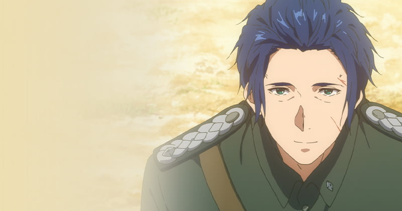
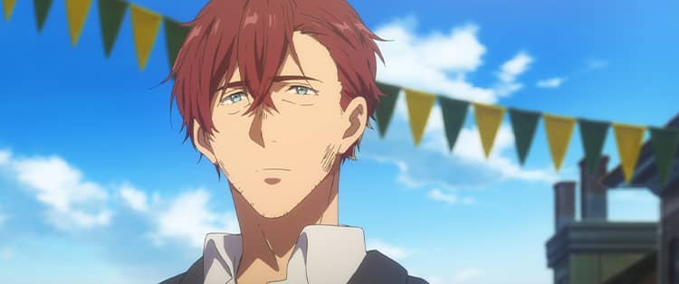
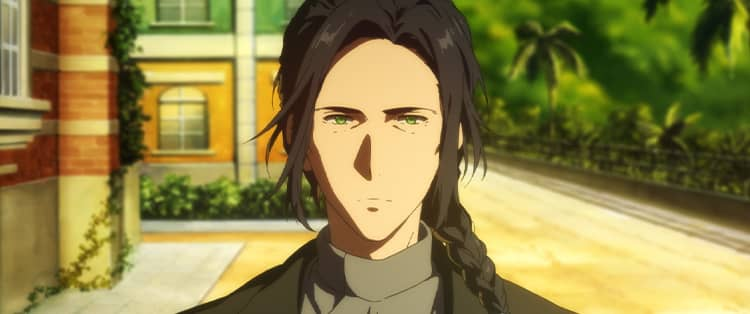
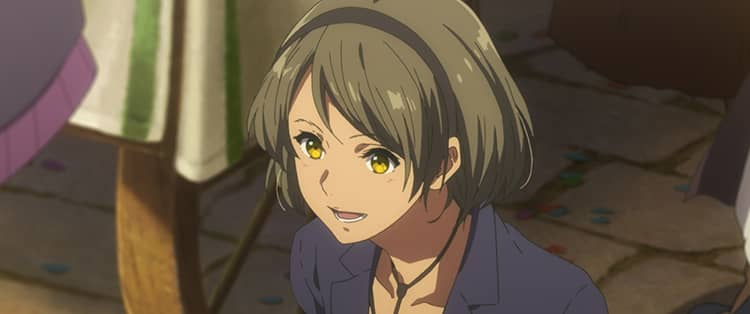
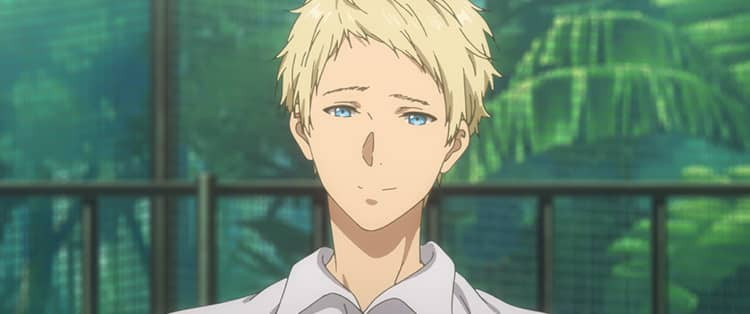
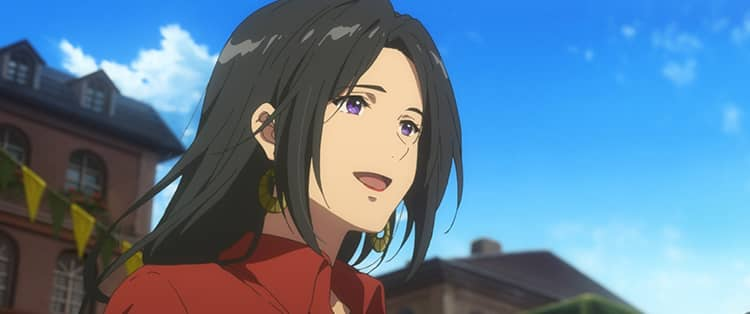
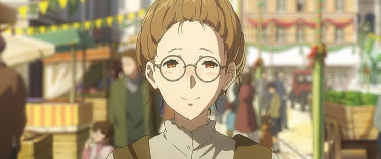
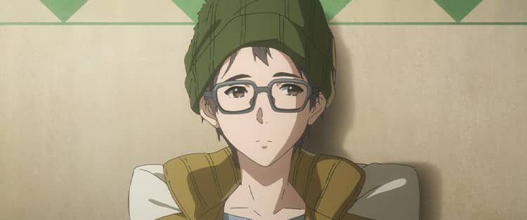
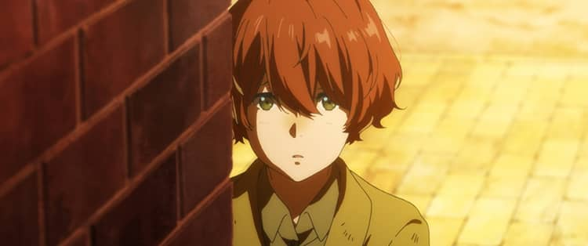
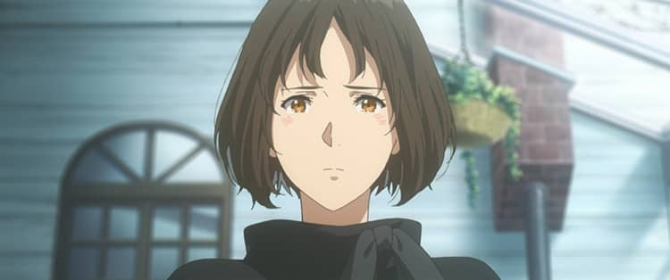

Characters
ヴァイオレット・エヴァーガーデン
ギルベルトに告げられた「愛してる」の意味を知るために、人の想いを手紙にする自動手記人形（ドール）の仕事に就いた少女。
C.H郵便社で働く以前は、感情を持たない「武器」としてギルベルトが指揮する部隊に所属する兵士だった。
代筆を通じてさまざまな感情を知りながら、いまもなおギルベルトへの届かない想いを募らせている。
CV：石川由依
ギルベルト・ブーゲンビリア

代々続く軍人一族の次男に生まれ、南北大陸戦争では陸軍少佐として指揮を執る。
兄のディートフリートから「武器」としてヴァイオレットを渡され、ともに戦線をくぐり抜けた。
彼女に名を与え、教育を施し、「武器」ではなく人として生きるように導こうとした。
激しい決戦で行方知れずとなり、未帰還兵となっている。
CV：浪川大輔
クラウディア・ホッジンズ

C.H郵便社の社長。戦時中はライデンシャフトリヒの陸軍中佐を務めた。
ギルベルトとは士官学校時代の友人で、ギルベルトのヴァイオレットに対する愛情を知る数少ない人物。
CV：子安武人
ディートフリート・ブーゲンビリア

ライデンシャフトリヒの海軍大佐。
陸軍一族であるブーゲンビリア家の長男でありながら、厳格な父親に反発し自身は海軍へ入隊。
一族の責務を弟のギルベルトに担わせた。
CV：木内秀信
アイリス・カナリー

「ライデン一の人気ドールになる」という夢を掲げ、C.H郵便社の自動手記人形として働いている。
ヴァイオレットの実力を認め、彼女と並ぶドールになると意気込んでいる。
CV：戸松 遥
ベネディクト・ブルー

C.H郵便社の配達員。
バイクに乗って日々多くの人々に手紙を届けている。
ホッジンズ、カトレアとは旧知の仲で、C.H郵便社の設立初期から働いている。
CV：内山昂輝
カトレア・ボードレール

C.H郵便社の自動手記人形の中でもっとも職歴が長く、後輩たちの面倒をみている。
ホッジンズに的確な助言をしたり、ギルベルトへの想いを抱え続けるヴァイオレットを心配している。
CV：遠藤 綾
エリカ・ブラウン

以前、自動手記人形としてC.H郵便社で働いていた。
現在は小説家になるという夢を叶えるため、ヴァイオレットの紹介で有名劇作家のオスカーに弟子入りしている。
CV：茅原実里
ユリス

ヴァイオレットに手紙の代筆を依頼した少年。
家族や、親友のリュカに対して素直になれない自分をもどかしく思っている。
CV：水橋かおり
リュカ

ユリスの親友。以前はよく一緒に遊んでいた。
密かに訪れては外から様子をうかがい、いつも彼のことを心配している。
CV：佐藤利奈
デイジー・マグノリア

ヴァイオレットが代筆依頼を受けた際に出会ったアン・マグノリアの孫。
アンが亡くなった後、大切に保管された古い手紙を見つけ、自動手記人形――ヴァイオレット・エヴァーガーデンの功績を辿る。
CV：諸星すみれ